reviewHistogram() bins a single numeric
column and plots the frequency of each bin. It optionally stacks the
bars by a categorical grouping column. It is the counterpart of reviewBar() for continuous variables.
This article walks through every argument of
reviewHistogram(data, col, fill_by = NULL, bins = 30, binwidth = NULL,
fill = "#7BB0D1", colors = PALETTE, sep = "\r\n",
base_size = 12, na.rm = TRUE, na_label = "Not reported")Default
Pass the data frame and a numeric column. Column names may be bare or
quoted. Values are split into bins (30 by default) and the
height of each bar is the number of studies falling in that bin.
reviewHistogram(studies, SampleSize)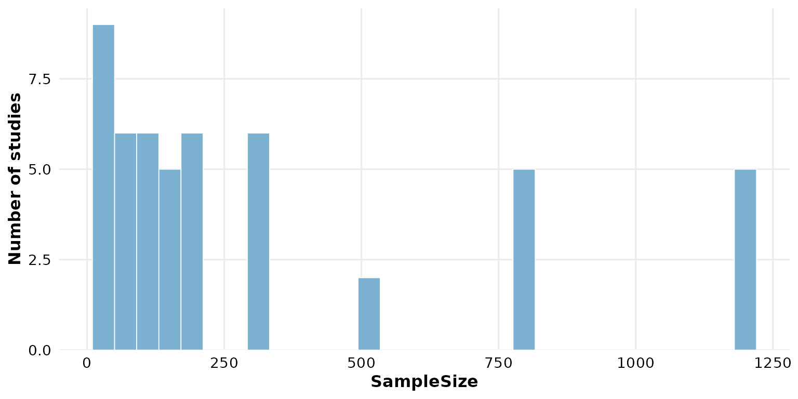
col: the column to bin
Any numeric column works. Year is a natural candidate —
it shows the temporal spread of the reviewed studies.
reviewHistogram(studies, Year)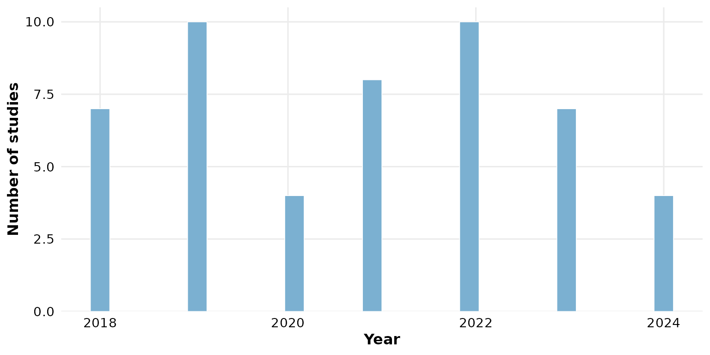
Non-numeric columns are rejected: reviewHistogram() is
for continuous variables. Use reviewBar() for categorical ones.
fill_by: stack by a grouping column
Supply a categorical column to fill_by and the histogram
becomes a stacked histogram: each bin is split into
colored segments, one per group. This shows how the composition of a
numeric variable varies across categories.
reviewHistogram(studies, SampleSize, fill_by = Design)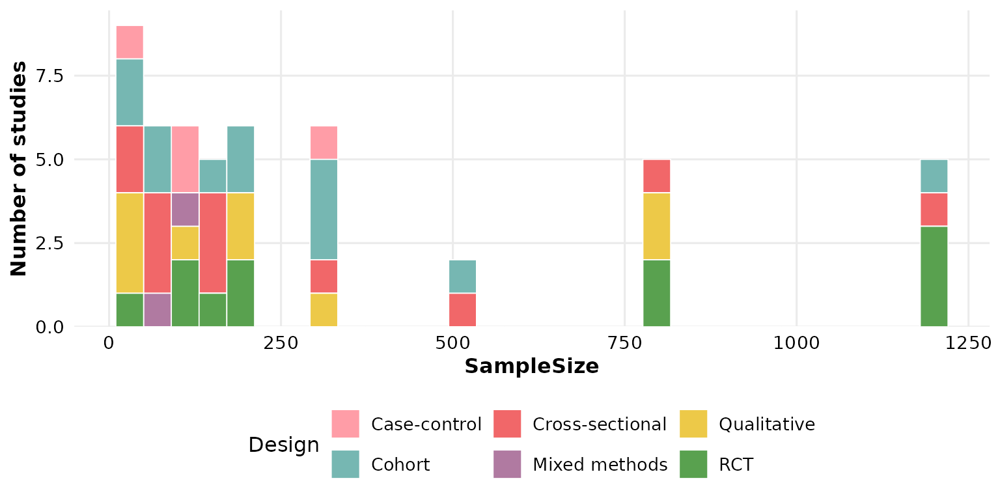
InterventionType works just as well:
reviewHistogram(studies, SampleSize, fill_by = InterventionType)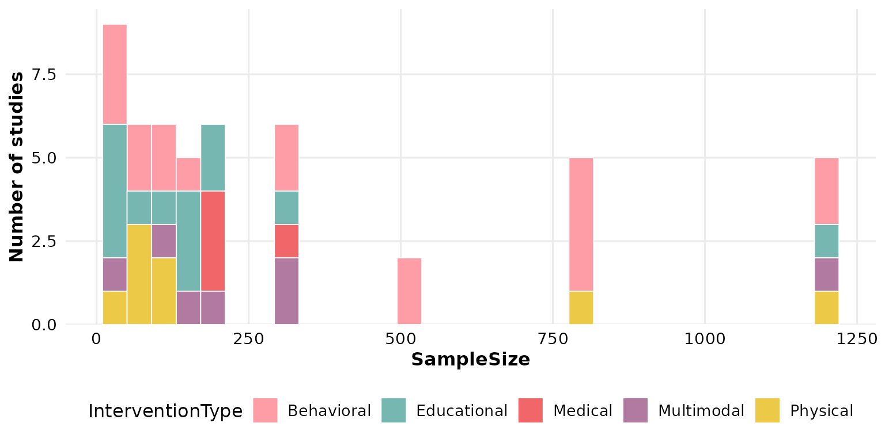
When fill_by is set the bars are colored from the colors
palette and the single fill
color is ignored.
bins: number of bins
bins controls how finely the range is divided (default
30). A small value gives broad, coarse bars:
reviewHistogram(studies, SampleSize, bins = 6)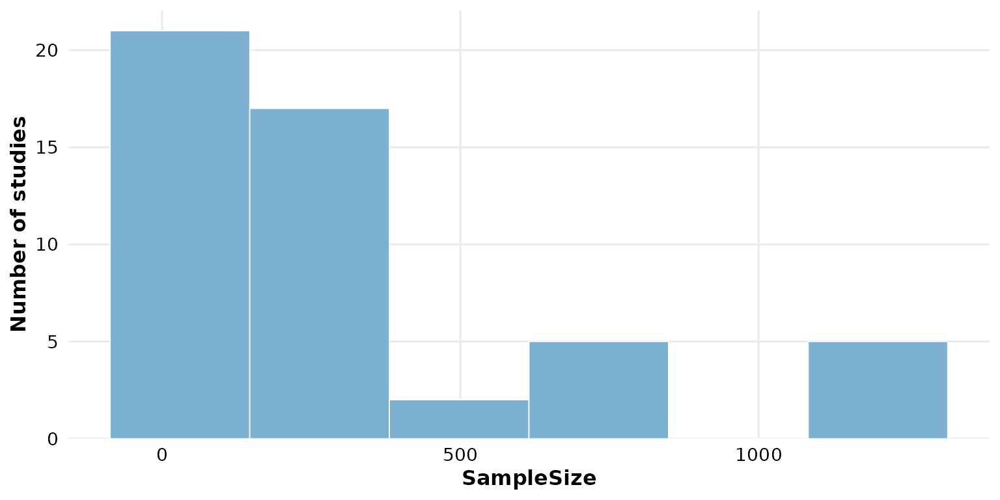
A large value gives many narrow bars, revealing finer structure:
reviewHistogram(studies, SampleSize, bins = 40)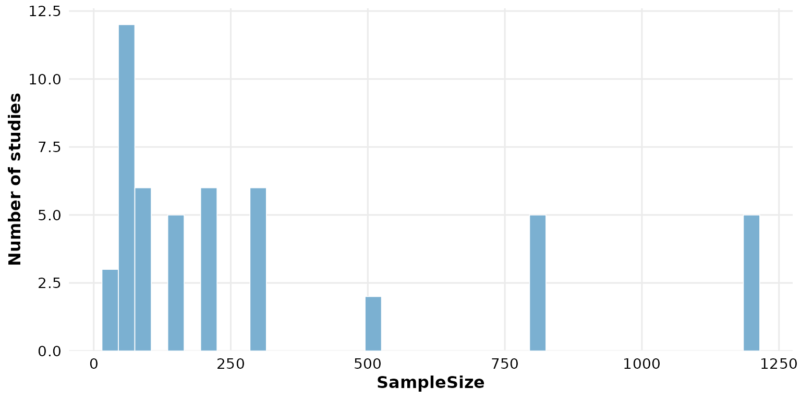
binwidth: fixed bin width
Set binwidth to fix the width of each bin in the units
of the data. This overrides bins when
supplied. Here each bar spans 100 participants:
reviewHistogram(studies, SampleSize, binwidth = 100)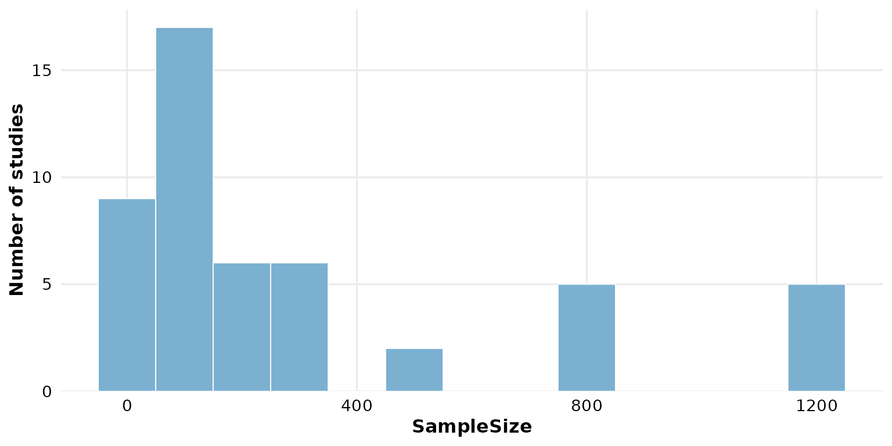
Because binwidth takes precedence, bins has
no effect once it is set:
reviewHistogram(studies, SampleSize, binwidth = 250, bins = 40)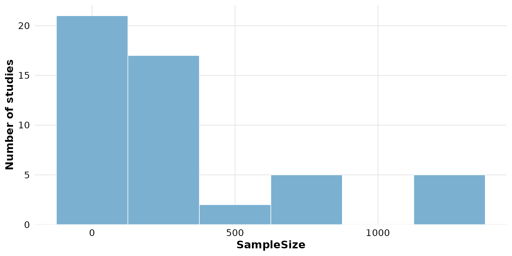
fill: bar color
When fill_by is NULL, a single hex color
paints every bar:
reviewHistogram(studies, SampleSize, fill = "#59a14f")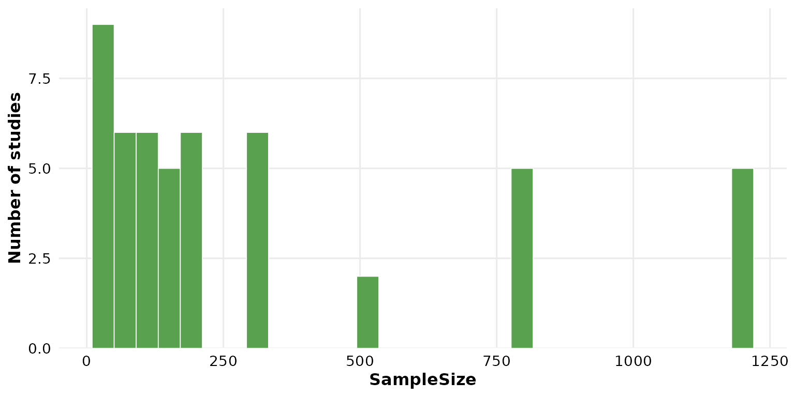
Use one of the package PALETTE colors:
reviewHistogram(studies, SampleSize, fill = PALETTE[4])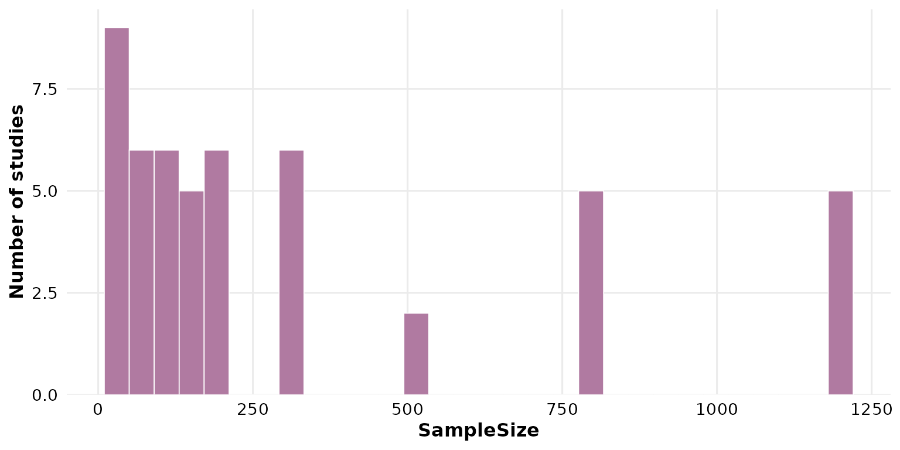
colors: the palette for grouped bars
colors supplies the fill colors cycled across groups
when fill_by is set (it has no effect otherwise). The
default is the package PALETTE:
reviewHistogram(studies, SampleSize, fill_by = Design, colors = PALETTE)
Pass your own vector to recolor the groups; it is recycled if shorter than the number of categories:
reviewHistogram(studies, SampleSize, fill_by = Design,
colors = c("#f16769", "#7ea9c7", "#edc948"))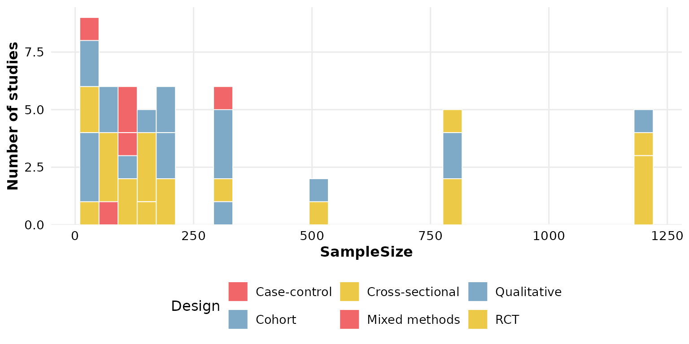
A named vector pins specific colors to specific groups:
reviewHistogram(studies, SampleSize, fill_by = Design,
colors = c("RCT" = "#f16769", "Cohort" = "#7ea9c7"))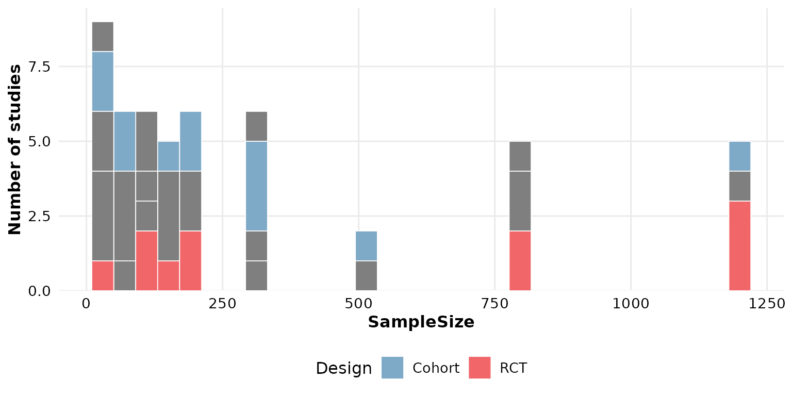
sep: multi-value separator
sep only matters when fill_by holds
multi-value cells (several values per row, newline-separated by
default). Numeric columns are single-valued, and the usual grouping
columns (Design, InterventionType) are too, so
this argument is rarely needed here. It mirrors the sep of
reviewBar(): change it if your grouping column uses a
different delimiter, e.g. sep = "; ".
base_size: overall text and element scaling
A single knob scales all text and spacing proportionally. Smaller, for multi-panel figures:
reviewHistogram(studies, SampleSize, base_size = 9)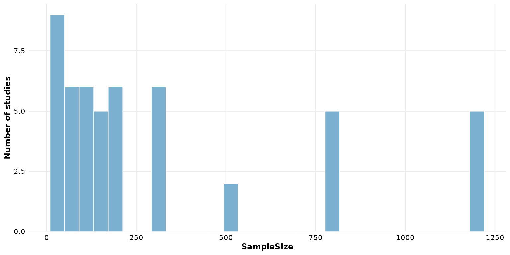
Larger, for slides or posters:
reviewHistogram(studies, SampleSize, base_size = 18)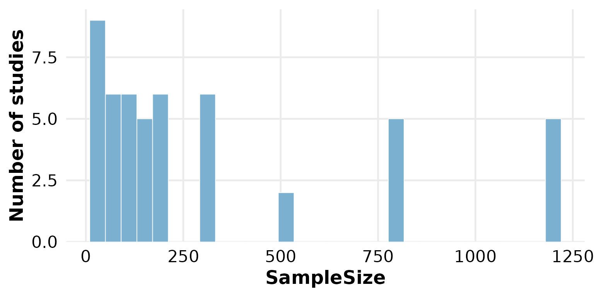
Missing data: na.rm and na_label
These two arguments control how NA cells are treated. We
use a column that actually has missing values —
FollowUpWeeks.
By default na.rm = TRUE silently drops rows whose value
in col (and, when grouping, in fill_by) is
missing:
reviewHistogram(studies, FollowUpWeeks)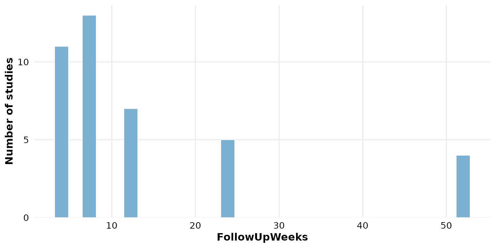
na_label names the missing-value group when a
fill_by column contains NA and
na.rm = FALSE. It labels those rows as their own stacked
segment rather than dropping them:
reviewHistogram(studies, SampleSize, fill_by = FundingSource,
na.rm = FALSE, na_label = "Not reported")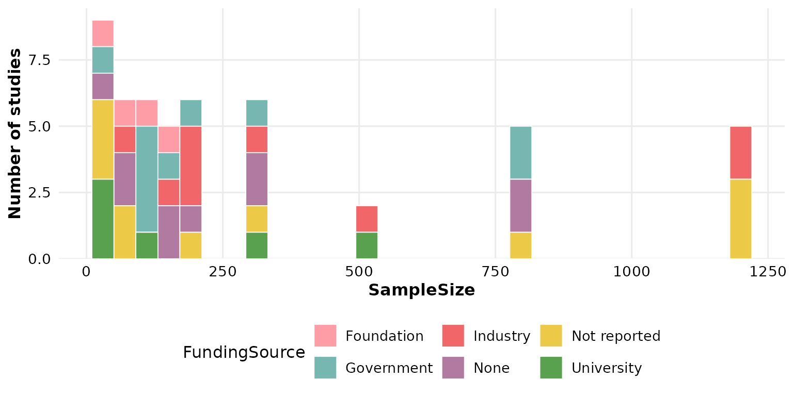
Note that na_label applies to missing values in
fill_by, not in col: numeric bins have no bar
for NA.
Composing with ggplot2
Every review*() function returns a plain ggplot, so you
can keep adding layers, scales, and labels with +:
reviewHistogram(studies, SampleSize, fill = "#59a14f") +
labs(title = "Sample sizes", subtitle = "n = 50 studies",
caption = "Source: example dataset") +
theme(plot.title.position = "plot")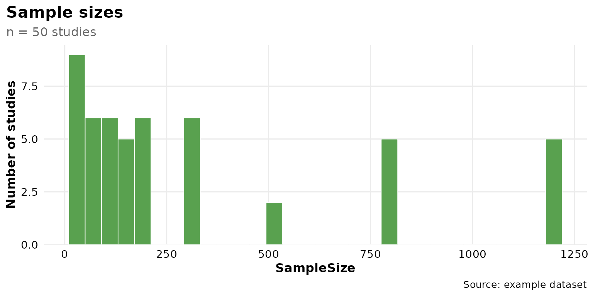